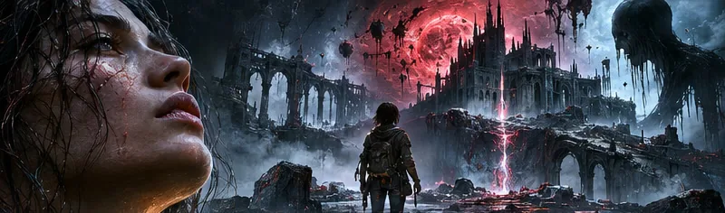
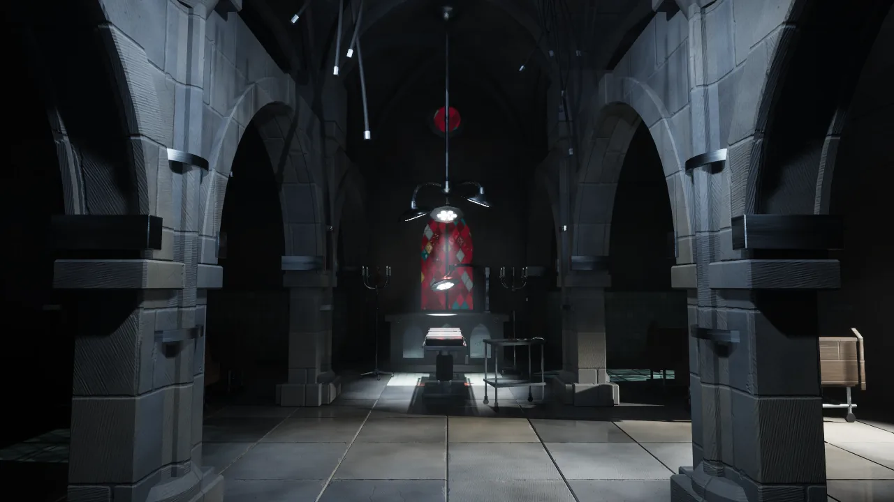
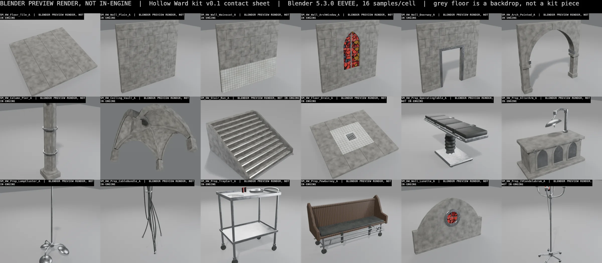
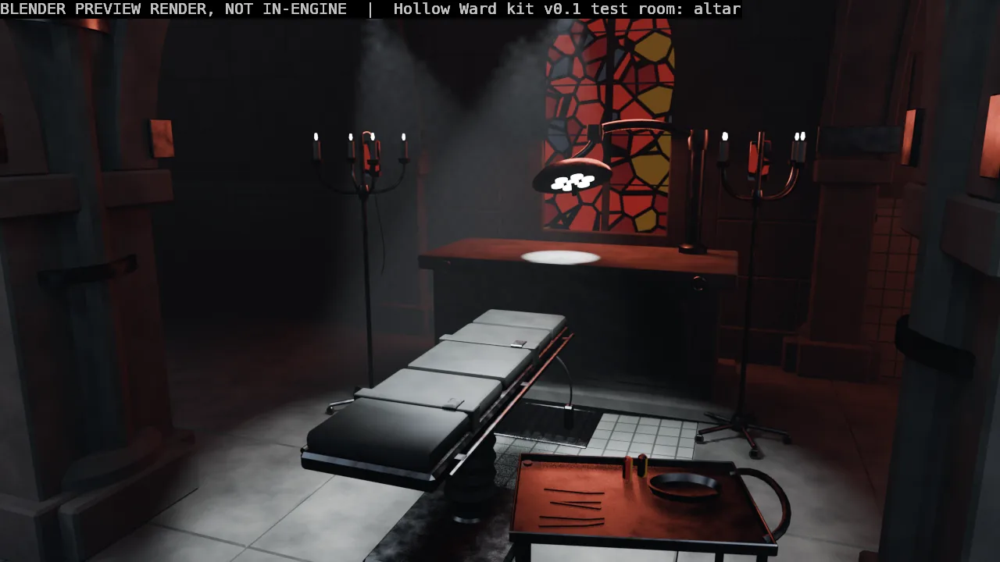
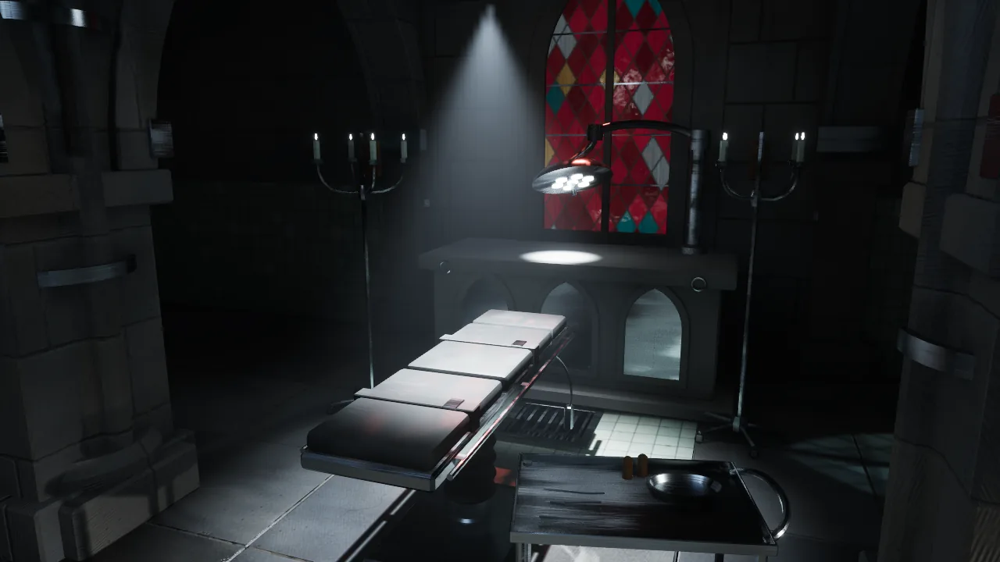
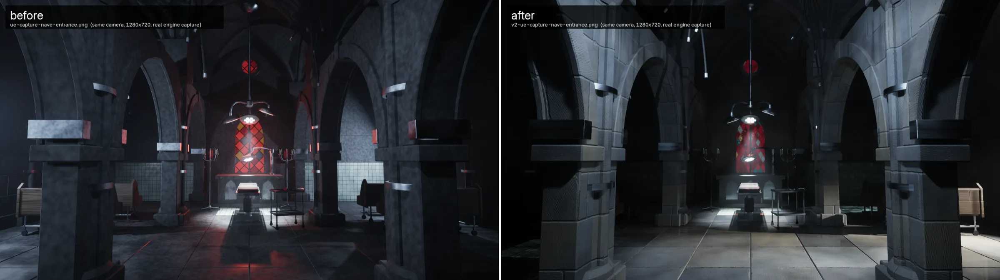
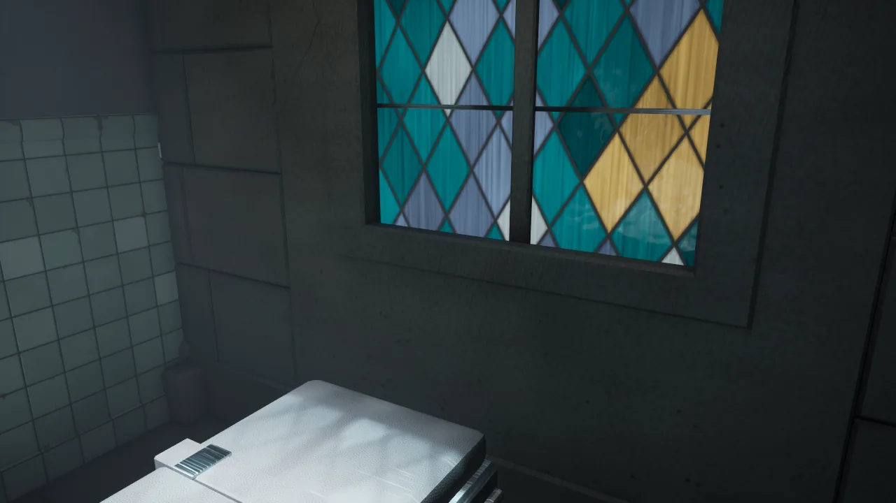
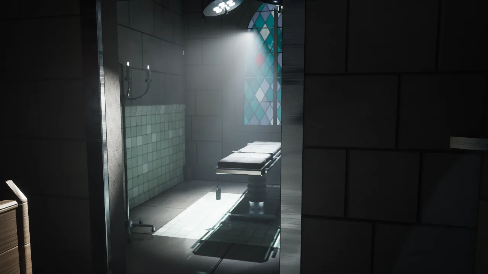
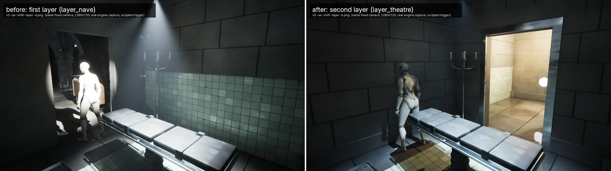

This is my own horror action RPG, in preproduction. I'm building it with a team of AI agents under my direction, on one hard rule: a concept is never passed off as a render, and a render is never passed off as the game.
One agent builds; a separate one attacks the result before it counts as done. Status words have fixed meanings, and every image carries one of five labels: concept, prototype, editor capture, gameplay capture or final build capture.
Modular environment pieces that pass the kit validator, with three planted faults that fail as intended.
Tests passing on the game's rules library. Proven outside the engine only.
Defects found by the red-team review: 1 critical, 12 major, 14 minor.
Original texture maps, made by script. Nothing downloaded, nothing licensed.

Kickoff concept · not in engineThe build took three things from the concept: a near-black, blue-green base; restraint; and red as the one loud colour. It took no building, creature, face or layout. Everything below was made for the game.

Gameplay capture · 2026-11-11
Blender preview, not in engine
Blender preview
Gameplay capture · 2026-11-11My review note on the first captures kept the chapel and operating-theatre fusion and the restrained red, and asked for four things before art quality could be signed off: tactile surfaces, original creatures, clearer paths through the space, and a moving gameplay review. Round two answered three of the four the same morning. Creatures are still open.

Gameplay captures · same camera
Gameplay capture
Gameplay captureThe game is built on a world with two layers. This is the first working shift, in the running game: the doorway the player stands in becomes a wall, the player is moved clear of it, and a closed wall opens onto a new room. Then it shifts back.

Gameplay captures · same cameraThe player and enemy are the engine's template mannequins. No original creatures yet.
The mechanic works; the look of it is a placeholder cue.
None yet. Every clip here is silent.
No sky or exterior yet, and nothing has been packaged as a playable build.